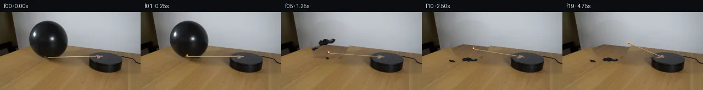

![首帧]()

Round 00
2026-11-05T11:56:14.281880+00:00像素候选变化代码 +236/−0inspection 更新
pixels 0c0997b0ae24df92 · code 373dfa60517e9bc1
查看本轮 generate.py 真实 diff
--- previous/generate.py
+++ current/generate.py
@@ -0,0 +1,236 @@
+"""Source-photo continuation using local pixel reconstruction and analytic animation."""
+from pathlib import Path
+import math
+import numpy as np
+import cv2
+from PIL import Image, ImageDraw, ImageFilter
+from artifact_io import save
+
+ROOT = Path(__file__).resolve().parent
+W, H, S = 256, 144, 4
+src = np.asarray(Image.open(ROOT / 'first_frame.png').convert('RGB'))
+yy, xx = np.mgrid[:H, :W].astype(np.float32)
+
+def shape_mask(points, blur=0):
+ canvas = Image.new('L', (W*S,H*S), 0)
+ ImageDraw.Draw(canvas).polygon([(round(x*S),round(y*S)) for x,y in points], fill=255)
+ canvas = canvas.resize((W,H), Image.Resampling.LANCZOS)
+ if blur: canvas=canvas.filter(ImageFilter.GaussianBlur(blur))
+ return np.asarray(canvas).astype(np.float32)/255
+
+def over(a, b, alpha):
+ if alpha.ndim == 2: alpha=alpha[...,None]
+ return a*(1-alpha)+b*alpha
+
+# Exact silhouette coordinates were read from the input photograph.
+balloon_outline = [(88,15.9),(78,17.1),(68,21.7),(60.2,29.5),(55.1,39.4),
+ (53.1,49.4),(54.3,60.9),(58.5,71.4),(65.7,79.3),
+ (76.0,84.0),(88,85.6),(99.6,84),(110,78.4),(117.4,69.1),
+ (122.2,58.8),(123.5,48),(121.3,36.7),(116.2,27.6),
+ (108.4,21),(98.3,17),(88,15.9)]
+balloon_mask=shape_mask(balloon_outline)
+
+# Remove the old thin shaft and pink adhesive from the plate/table.
+shaft_mask=np.zeros((H,W),np.uint8)
+cv2.line(shaft_mask,(87,84),(188,82),255,3,cv2.LINE_AA)
+cv2.fillPoly(shaft_mask,[np.array([(173,79),(183,79),(186,87),(176,88)],np.int32)],255)
+base=cv2.inpaint(src,shaft_mask,3,cv2.INPAINT_TELEA).astype(np.float32)
+
+# Reconstruct the view that the inflated balloon initially obscures.
+# Smooth wall: a local quadratic color fit, sampled only on visible wall.
+X=(xx-90)/90; Y=(yy-45)/70
+features=np.stack([np.ones_like(X),X,Y,X*X,X*Y,Y*Y],-1)
+wall_samples=(xx>30)&(xx<179)&(yy>3)&(yy<64)&(balloon_mask<.001)
+wall_samples &= ((xx<46)|(xx>135)|(yy<10))
+coef=np.linalg.lstsq(features[wall_samples],src[wall_samples].astype(float),rcond=None)[0]
+wall=np.clip(features@coef,0,255)
+# Table rear edge turns at a corner hidden by the balloon.
+back_edge=np.where(xx<75,82.0-0.307*xx,59.0+(xx-75)*0.102)
+table_weight=np.clip((yy-back_edge+0.25)/1.0,0,1)
+# Use the source table's real wood grain, moved upward from the foreground.
+# A low-order light field replaces the source patch's broad shading.
+mapx=(xx-7).astype(np.float32)
+mapy=np.clip(yy+36,0,H-1).astype(np.float32)
+wood=cv2.remap(src.astype(np.float32),mapx,mapy,cv2.INTER_LINEAR,borderMode=cv2.BORDER_REFLECT)
+wood_high=wood-cv2.GaussianBlur(wood,(0,0),4)
+table_samples=(xx>27)&(xx<155)&(yy>91)&(yy<141)
+# Exclude the original balloon's soft cast shadow from lighting samples.
+table_samples &= ~(((xx-94)/43)**2+((yy-88)/19)**2<1)
+tcoef=np.linalg.lstsq(features[table_samples],src[table_samples].astype(float),rcond=None)[0]
+table=np.clip(features@tcoef + wood_high,0,255)
+reconstructed=over(wall,table,table_weight)
+# Expanded silhouette ensures no residual dark rim; broader lower mask removes shadow.
+remove=cv2.dilate((balloon_mask*255).astype(np.uint8),np.ones((5,5),np.uint8))/255.0
+shadow=np.exp(-(((xx-94)/31)**2+((yy-88)/11.5)**2)*1.9)
+shadow*=table_weight
+remove=np.maximum(remove,shadow)
+remove=cv2.GaussianBlur(remove.astype(np.float32),(0,0),0.75)
+empty=over(base,reconstructed,remove).astype(np.float32)
+
+# Helpers draw at 4x resolution for stable subpixel antialiasing.
+def layer_draw(frame, callback):
+ layer=Image.new('RGBA',(W*S,H*S),(0,0,0,0))
+ callback(ImageDraw.Draw(layer),S)
+ arr=np.asarray(layer.resize((W,H),Image.Resampling.LANCZOS)).astype(np.float32)
+ return over(frame,arr[...,:3],arr[...,3]/255)
+
+def line(draw, s, points, color, width):
+ draw.line([(round(x*s),round(y*s)) for x,y in points],fill=color,width=max(1,round(width*s)))
+
+def ellipse(draw,s,box,color):
+ draw.ellipse(tuple(round(z*s) for z in box),fill=color)
+
+PIVOT=np.array([179.5,82.4])
+RADIUS=95.0
+Y_SCALE=0.325
+START=math.atan2(-(84-PIVOT[1])/Y_SCALE, -(84-PIVOT[0]))
+# START is a small negative angle: head initially slightly below the pivot.
… diff truncated; 149 more lines …